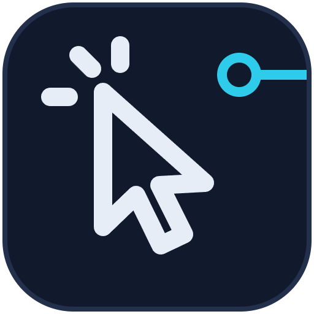
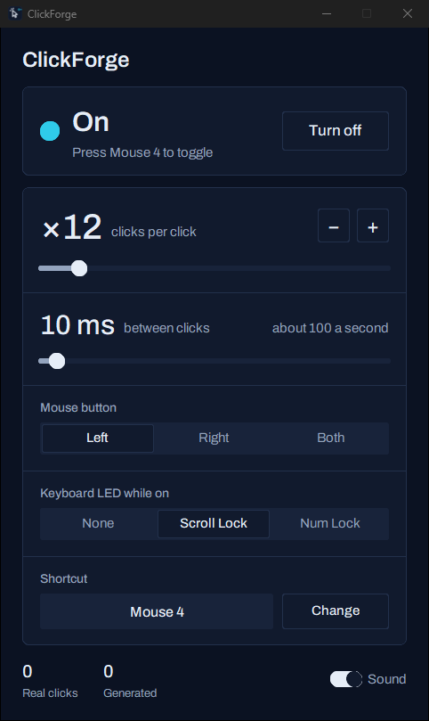

ClickForge
Turns one mouse click into many on Windows, with a Stream Deck plugin.

On at ×12Each real click sends 12
Mouse 4Toggle with a key, a mouse button or the Stream Deck

Turns one mouse click into many on Windows, with a Stream Deck plugin.

On at ×12Each real click sends 12
Mouse 4Toggle with a key, a mouse button or the Stream Deck